Chapter VI — Axis, Mezzo, Herma, Beauty, Height, Hexa
Pages 025 to 062C of the book · chapter 6 of 8
Chapter VI of La Livrée d'Hermès: Axis, Mezzo, Herma, Beauty, Height and Hexa. Even odd numbers and the magic square of order 6, the solar square and the ankh cross, the 64 flowers, and Apollinaire's “Twilight”.
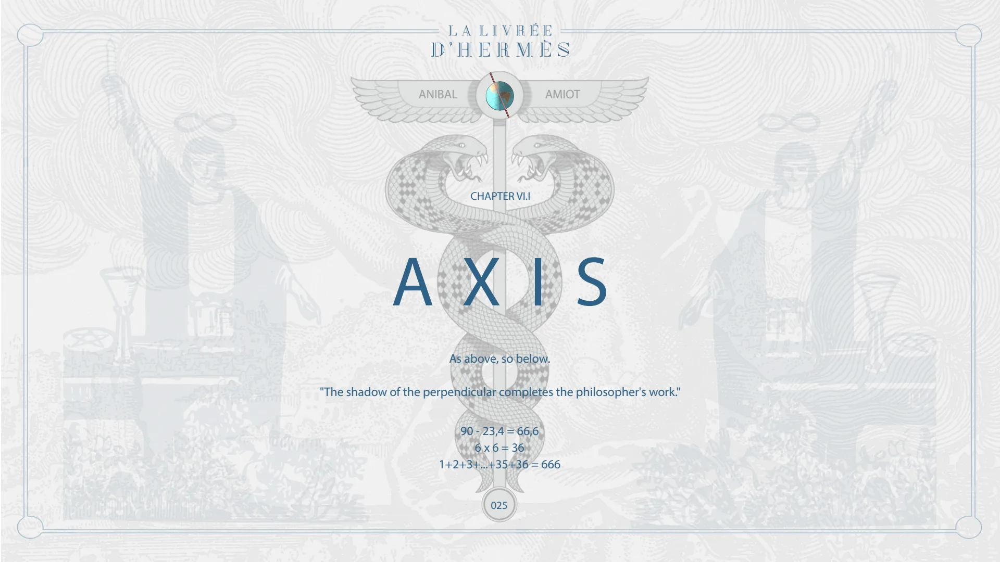
CHAPTER VI.I
AXIS
As above, so below.
ANIBAL
AMIOT
"The shadow of the perpendicular completes the philosopher's work."
90 - 23,4 = 66,6 6 x 6 = 36 1+2+3+...+35+36 = 666
025
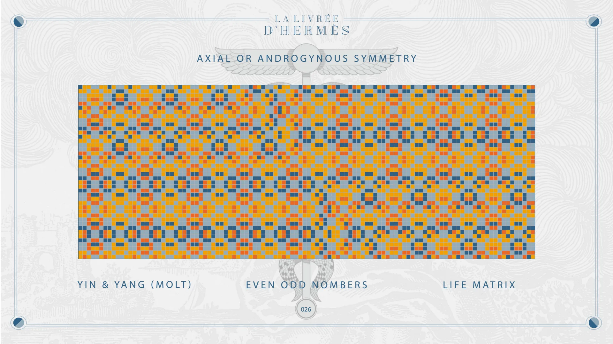
YIN & YANG (MOLT)
AXIAL OR ANDROGYNOUS SYMMETRY
EVEN ODD NUMBERS
026
LIFE MATRIX
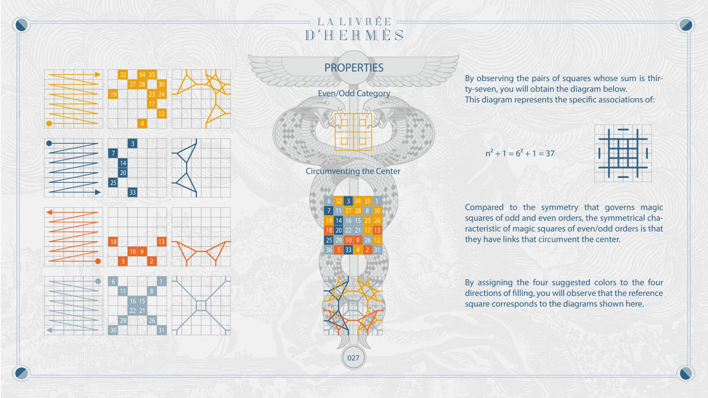
19 19 7 7 32 32 34 35 34 35 27 28 27 28 3 3 4 4 30 23 24 17 30 23 24 17 12 12
PROPERTIES
Even/Odd Category
By observing the pairs of squares whose sum is thirty-seven, you will obtain the diagram below. This diagram represents the specific associations of:
25 25 18 18 14 20 14 20 5 33 33 10 9 10 9 2 13 13 Circumventing the Center 6 7 19 18 25 36 32 11 14 20 29 5 3 34 35 8 1 30 27 28 16 15 22 21 10 9 4 23 24 17 26 2 13 12 31 33
n² + 1 = 6² + 1 = 37
Compared to the symmetry that governs magic squares of odd and even orders, the symmetrical characteristic of magic squares of even/odd orders is that they have links that circumvent the center.
6 6 5 11 11 16 15 22 21 16 15 22 21 2 8 8 1 1
By assigning the four suggested colors to the four directions of filling, you will observe that the reference square corresponds to the diagrams shown here.
36 36 29 29 26 26 31 31 027
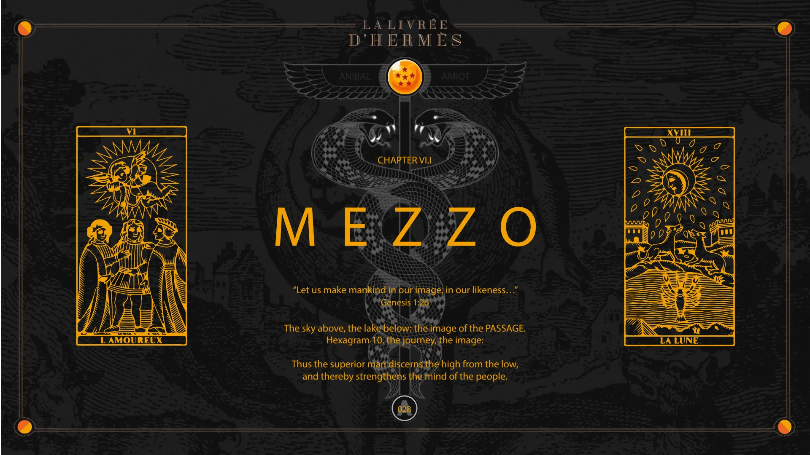
CHAPTER VI.I
MEZZO
ANIBAL
AMIOT
“Let us make mankind in our image, in our likeness…” Genesis 1:26
The sky above, the lake below: the image of the PASSAGE. Hexagram 10, the journey, the image:
Thus the superior man discerns the high from the low, and thereby strengthens the mind of the people.
A 028
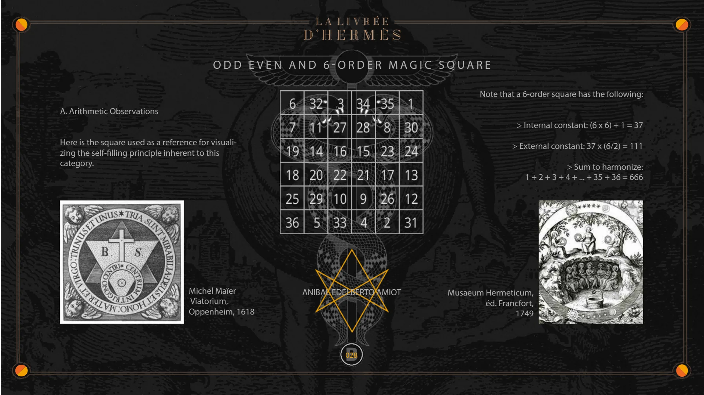
ODD EVEN AND 6-ORDER MAGIC SQUARE
A. Arithmetic Observations
Here is the square used as a reference for visualizing the self-filling principle inherent to this category.
Michel Maïer Viatorium, Oppenheim, 1618
ANIBAL EDELBERTO AMIOT
Note that a 6-order square has the following:
> Internal constant: (6 x 6) + 1 = 37
> External constant: 37 x (6/2) = 111
> Sum to harmonize: 1 + 2 + 3 + 4 + ... + 35 + 36 = 666
Musaeum Hermeticum, éd. Francfort, 1749
B 028
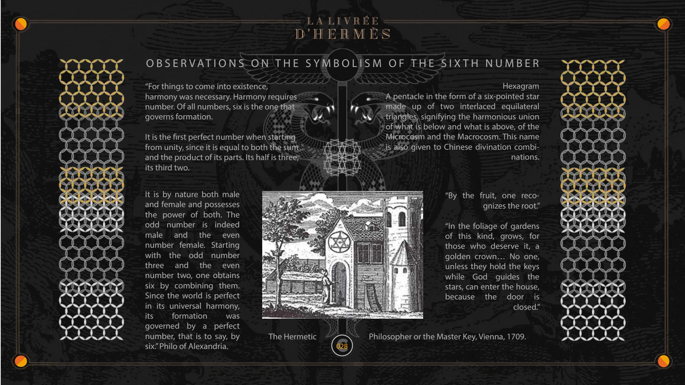
OBSERVATIONS ON THE SYMBOLISM OF THE SIXTH NUMBER
“For things to come into existence, harmony was necessary. Harmony requires number. Of all numbers, six is the one that governs formation.
It is the first perfect number when starting from unity, since it is equal to both the sum and the product of its parts. Its half is three, its third two.
It is by nature both male and female and possesses the power of both. The odd number is indeed male and the even number female. Starting with the odd number three and the even number two, one obtains six by combining them. Since the world is perfect in its universal harmony, its formation was governed by a perfect number, that is to say, by six.” Philo of Alexandria.
The Hermetic
Hexagram A pentacle in the form of a six-pointed star made up of two interlaced equilateral triangles, signifying the harmonious union of what is below and what is above, of the Microcosm and the Macrocosm. This name is also given to Chinese divination combinations.
hermético o la llave maestra, Viena, 1709.�
“By the fruit, one recognizes the root.”
“In the foliage of gardens of this kind, grows, for those who deserve it, a golden crown… No one, unless they hold the keys while God guides the stars, can enter the house, because the door is closed.”
C 028
Philosopher or the Master Key, Vienna, 1709.
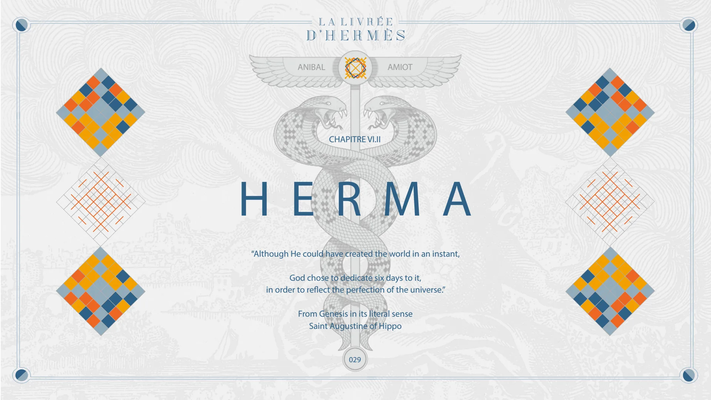
CHAPITRE VI.II
HERMA
ANIBAL
AMIOT
“Although He could have created the world in an instant,
God chose to dedicate six days to it, in order to reflect the perfection of the universe.”
From Genesis in its literal sense Saint Augustine of Hippo
029
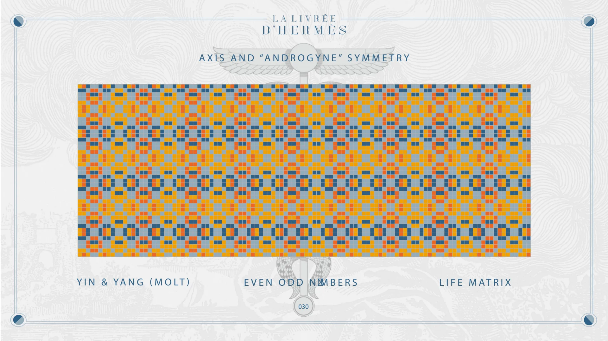
YIN & YANG (MOLT)
AXIS AND “ANDROGYNE” SYMMETRY
EVEN ODD NUMBERS
030
LIFE MATRIX
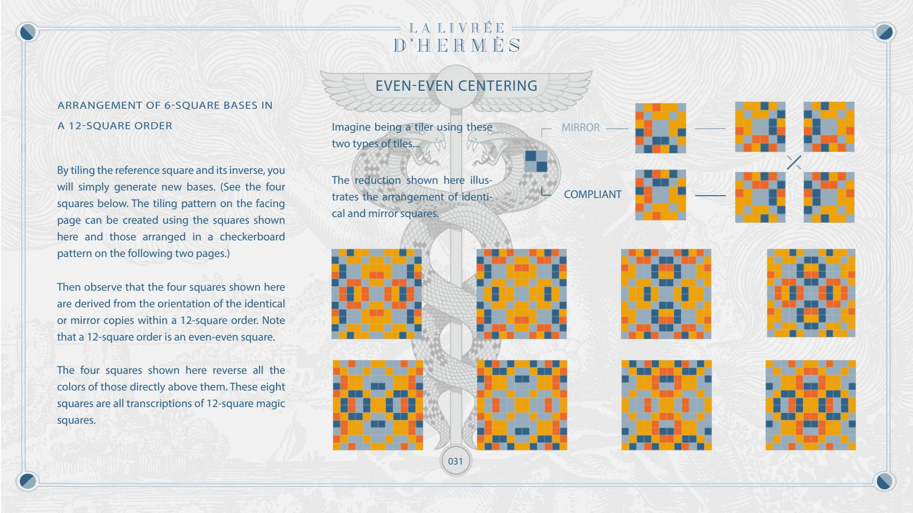
EVEN-EVEN CENTERING
ARRANGEMENT OF 6-SQUARE BASES IN
A 12-SQUARE ORDER
By tiling the reference square and its inverse, you will simply generate new bases. (See the four squares below. The tiling pattern on the facing page can be created using the squares shown here and those arranged in a checkerboard pattern on the following two pages.)
Then observe that the four squares shown here are derived from the orientation of the identical or mirror copies within a 12-square order. Note that a 12-square order is an even-even square.
The four squares shown here reverse all the colors of those directly above them. These eight squares are all transcriptions of 12-square magic squares.
Imagine being a tiler using these two types of tiles...
MIRROR
The reduction shown here illustrates the arrangement of identical and mirror squares.
COMPLIANT
031
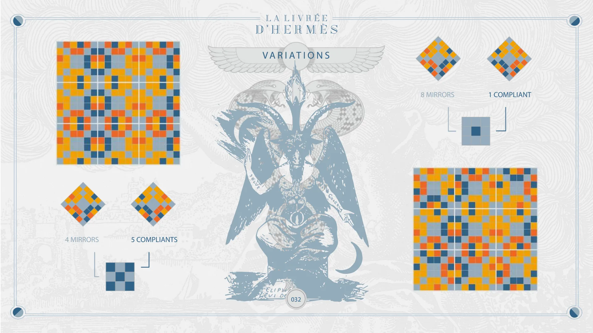
4 MIRRORS
5 COMPLIANTS
VARIATIONS
032
8 MIRRORS
1 COMPLIANT
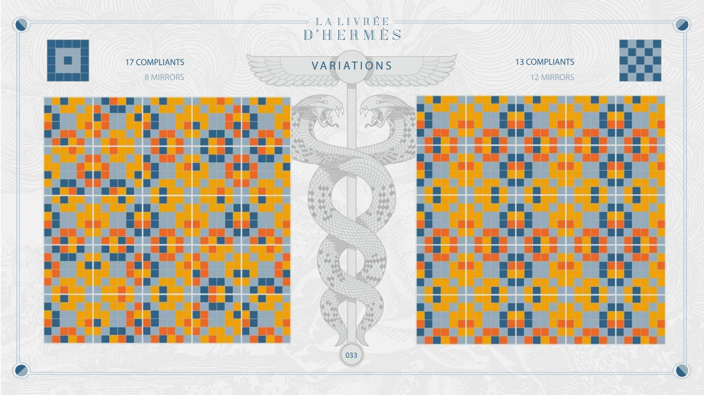
17 COMPLIANTS 8 MIRRORS
VARIATIONS
033
13 COMPLIANTS 12 MIRRORS
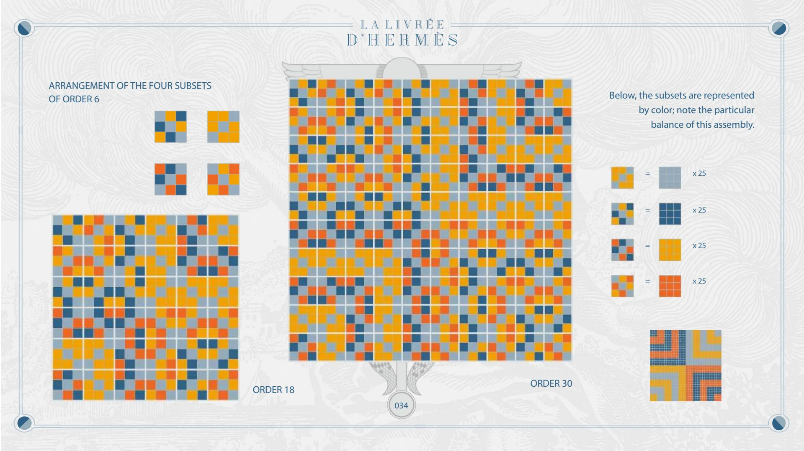
ARRANGEMENT OF THE FOUR SUBSETS OF ORDER 6
Below, the subsets are represented by color; note the particular balance of this assembly.
ORDER 18
034
ORDER 30
= = = = x 25 x 25 x 25 x 25
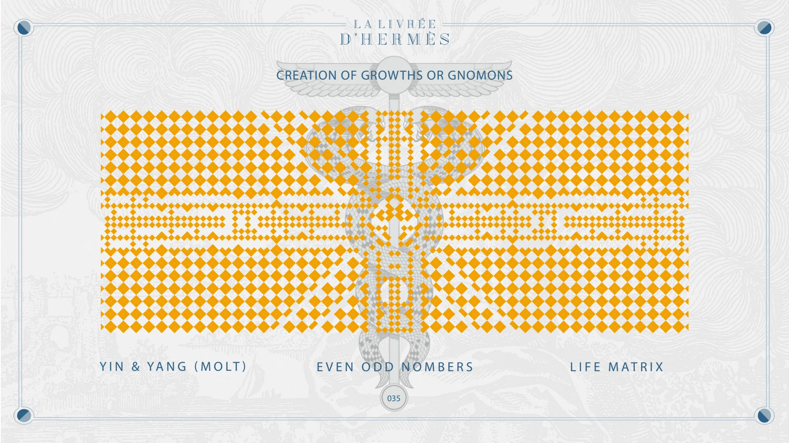
YIN & YANG (MOLT)
CREATION OF GROWTHS OR GNOMONS
EVEN ODD NUMBERS
035
LIFE MATRIX
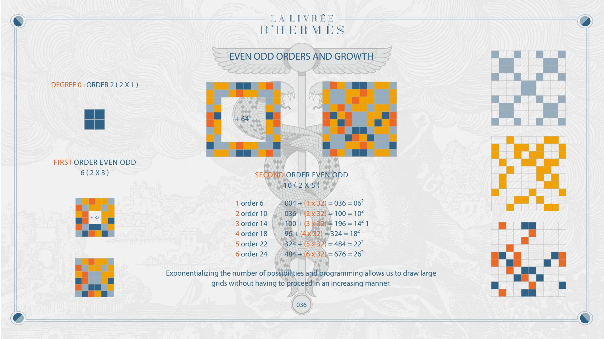
EVEN ODD ORDERS AND GROWTH
SECOND ORDER EVEN ODD 10 ( 2 X 5 )
DEGREE 0 : ORDER 2 ( 2 X 1 )
FIRST ORDER EVEN ODD 6 ( 2 X 3 )
+ 32 + 64
1 order 6 2 order 10 3 order 14 4 order 18 5 order 22 6 order 24
004 + (1 x 32) = 036 = 06² 036 + (2 x 32) = 100 = 10² 100 + (3 x 32) = 196 = 14² 1 96 + (4 x 32) = 324 = 18² 324 + (5 x 32) = 484 = 22² 484 + (6 x 32) = 676 = 26²
Exponentializing the number of possibilities and programming allows us to draw large grids without having to proceed in an increasing manner.
036
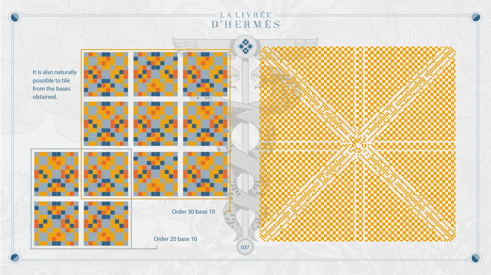
It is also naturally possible to tile from the bases obtained.
Order 30 base 10
Order 20 base 10
037
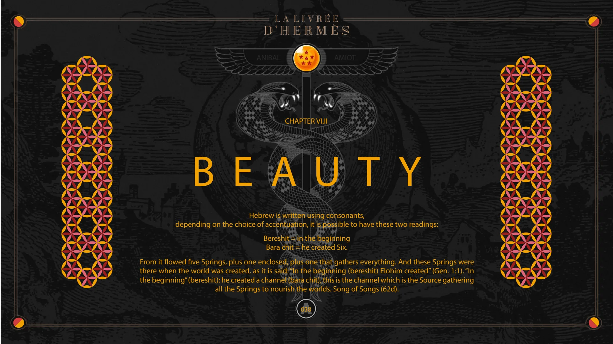
CHAPTER VI.II
BEAUTY
ANIBAL
AMIOT
Hebrew is written using consonants, depending on the choice of accentuation, it is possible to have these two readings:
Bereshit = in the beginning Bara chit = he created Six.
From it flowed five Springs, plus one enclosed, plus one that gathers everything. And these Springs were there when the world was created, as it is said: “In the beginning (bereshit) Elohim created” (Gen. 1:1). “In the beginning” (bereshit): he created a channel (bara chit), this is the channel which is the Source gathering all the Springs to nourish the worlds. Song of Songs (62d).
A 038
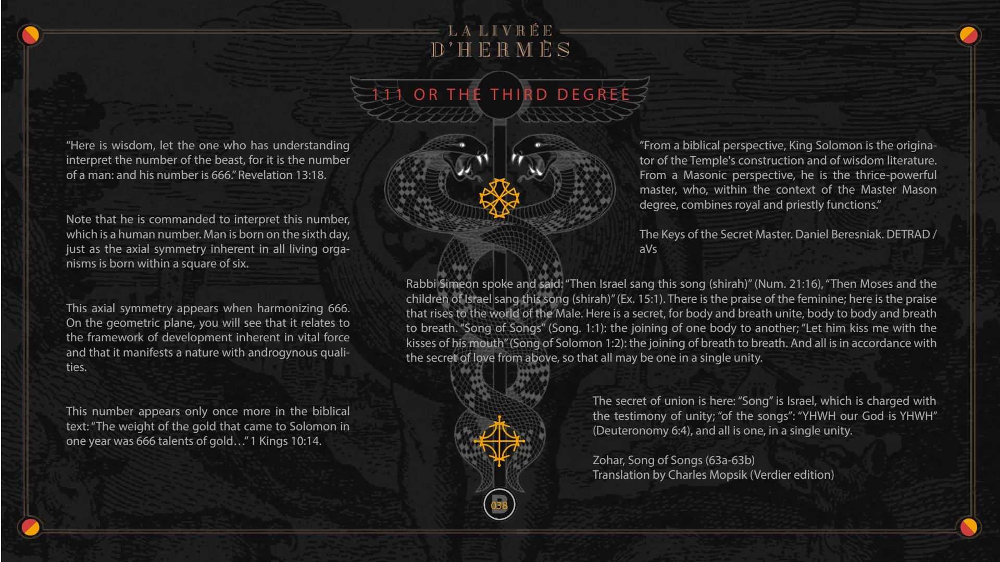
11 1 OR THE THIRD DEGREE
“Here is wisdom, let the one who has understanding interpret the number of the beast, for it is the number of a man: and his number is 666.” Revelation 13:18.
Note that he is commanded to interpret this number, which is a human number. Man is born on the sixth day, just as the axial symmetry inherent in all living organisms is born within a square of six.
This axial symmetry appears when harmonizing 666. On the geometric plane, you will see that it relates to the framework of development inherent in vital force and that it manifests a nature with androgynous qualities.
This number appears only once more in the biblical text: “The weight of the gold that came to Solomon in one year was 666 talents of gold…” 1 Kings 10:14.
“From a biblical perspective, King Solomon is the originator of the Temple's construction and of wisdom literature. From a Masonic perspective, he is the thrice-powerful master, who, within the context of the Master Mason degree, combines royal and priestly functions.”
The Keys of the Secret Master. Daniel Beresniak. DETRAD / aVs
Rabbi Simeon spoke and said: “Then Israel sang this song (shirah)” (Num. 21:16), “Then Moses and the children of Israel sang this song (shirah)” (Ex. 15:1). There is the praise of the feminine; here is the praise that rises to the world of the Male. Here is a secret, for body and breath unite, body to body and breath to breath. “Song of Songs” (Song. 1:1): the joining of one body to another; “Let him kiss me with the kisses of his mouth” (Song of Solomon 1:2): the joining of breath to breath. And all is in accordance with the secret of love from above, so that all may be one in a single unity.
The secret of union is here: “Song” is Israel, which is charged with the testimony of unity; “of the songs”: “YHWH our God is YHWH” (Deuteronomy 6:4), and all is one, in a single unity.
Zohar, Song of Songs (63a-63b) Translation by Charles Mopsik (Verdier edition)
B 038
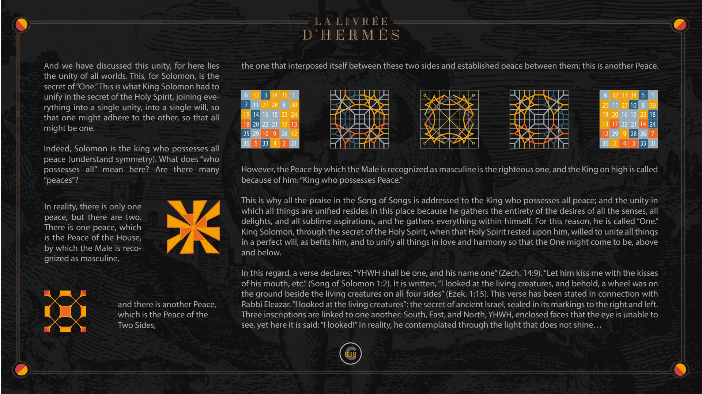
And we have discussed this unity, for here lies the unity of all worlds. This, for Solomon, is the secret of “One.” This is what King Solomon had to unify in the secret of the Holy Spirit, joining everything into a single unity, into a single will, so that one might adhere to the other, so that all might be one.
Indeed, Solomon is the king who possesses all peace (understand symmetry). What does “who possesses all” mean here? Are there many “peaces”?
In reality, there is only one peace, but there are two. There is one peace, which is the Peace of the House, by which the Male is recognized as masculine, and there is another Peace, which is the Peace of the Two Sides, the one that interposed itself between these two sides and established peace between them; this is another Peace.
3 34 35 8 1 30 33 27 34 10 6 7 19 18 25 36 32 11 14 20 29 5 27 28 16 15 22 21 10 9 4 33 23 24 17 26 2 13 12 31 6 25 19 13 12 36 32 11 20 17 29 2 16 15 22 21 9 4 28 3 5 8 23 14 26 35 1 30 18 24 7 31
However, the Peace by which the Male is recognized as masculine is the righteous one, and the King on high is called because of him: “King who possesses Peace.”
This is why all the praise in the Song of Songs is addressed to the King who possesses all peace; and the unity in which all things are unified resides in this place because he gathers the entirety of the desires of all the senses, all delights, and all sublime aspirations, and he gathers everything within himself. For this reason, he is called “One.” King Solomon, through the secret of the Holy Spirit, when that Holy Spirit rested upon him, willed to unite all things in a perfect will, as befits him, and to unify all things in love and harmony so that the One might come to be, above and below.
In this regard, a verse declares: “YHWH shall be one, and his name one” (Zech. 14:9). “Let him kiss me with the kisses of his mouth, etc.” (Song of Solomon 1:2). It is written, “I looked at the living creatures, and behold, a wheel was on the ground beside the living creatures on all four sides” (Ezek. 1:15). This verse has been stated in connection with Rabbi Eleazar. “I looked at the living creatures”: the secret of ancient Israel, sealed in its markings to the right and left. Three inscriptions are linked to one another: South, East, and North, YHWH, enclosed faces that the eye is unable to see, yet here it is said: “I looked!” In reality, he contemplated through the light that does not shine…
C 038
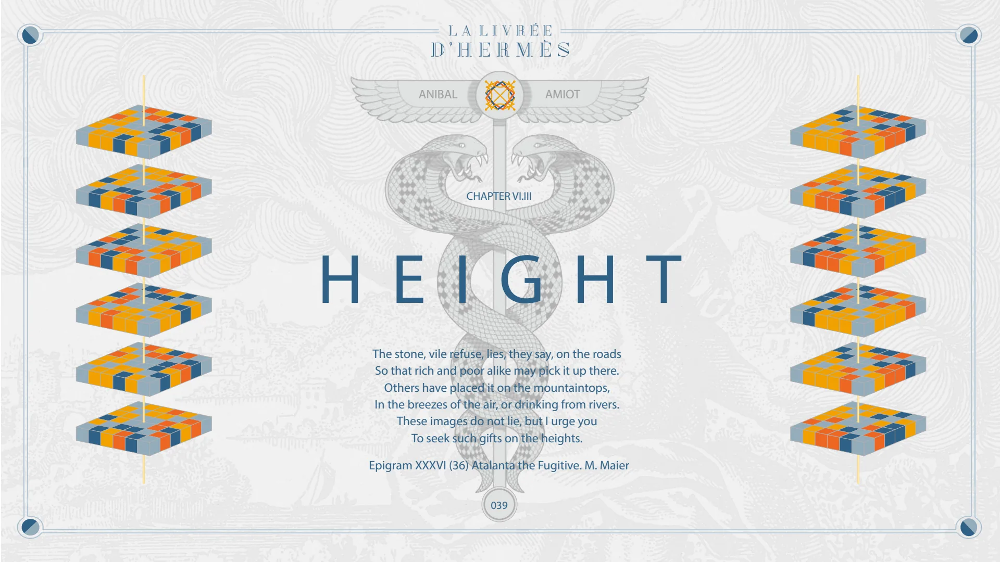
CHAPTER VI.III
HEIGHT
ANIBAL
AMIOT
The stone, vile refuse, lies, they say, on the roads So that rich and poor alike may pick it up there. Others have placed it on the mountaintops, In the breezes of the air, or drinking from rivers. These images do not lie, but I urge you To seek such gifts on the heights.
Epigram XXXVI (36) Atalanta the Fugitive. M. Maier
039
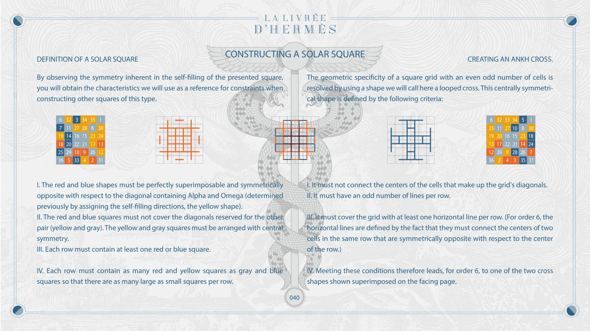
CONSTRUCTING A SOLAR SQUARE
DEFINITION OF A SOLAR SQUARE
By observing the symmetry inherent in the self-filling of the presented square, you will obtain the characteristics we will use as a reference for constraints when constructing other squares of this type.
6 7 19 18 25 36 32 11 14 20 29 5 3 34 35 8 1 30 27 28 16 15 22 21 10 9 4 33 23 24 17 26 2 13 12 31
I. The red and blue shapes must be perfectly superimposable and symmetrically opposite with respect to the diagonal containing Alpha and Omega (determined previously by assigning the self-filling directions, the yellow shape). II. The red and blue squares must not cover the diagonals reserved for the other pair (yellow and gray). The yellow and gray squares must be arranged with central symmetry. III. Each row must contain at least one red or blue square.
IV. Each row must contain as many red and yellow squares as gray and blue squares so that there are as many large as small squares per row.
CREATING AN ANKH CROSS.
The geometric specificity of a square grid with an even odd number of cells is resolved by using a shape we will call here a looped cross. This centrally symmetrical shape is defined by the following criteria:
6 25 19 13 12 36 32 11 20 17 29 2 33 27 34 10 5 8 23 14 26 35 1 30 18 24 7 31 16 15 22 21 28 3 9 4
I. It must not connect the centers of the cells that make up the grid's diagonals. II. It must have an odd number of lines per row.
III. It must cover the grid with at least one horizontal line per row. (For order 6, the horizontal lines are defined by the fact that they must connect the centers of two cells in the same row that are symmetrically opposite with respect to the center of the row.)
IV. Meeting these conditions therefore leads, for order 6, to one of the two cross shapes shown superimposed on the facing page.
040
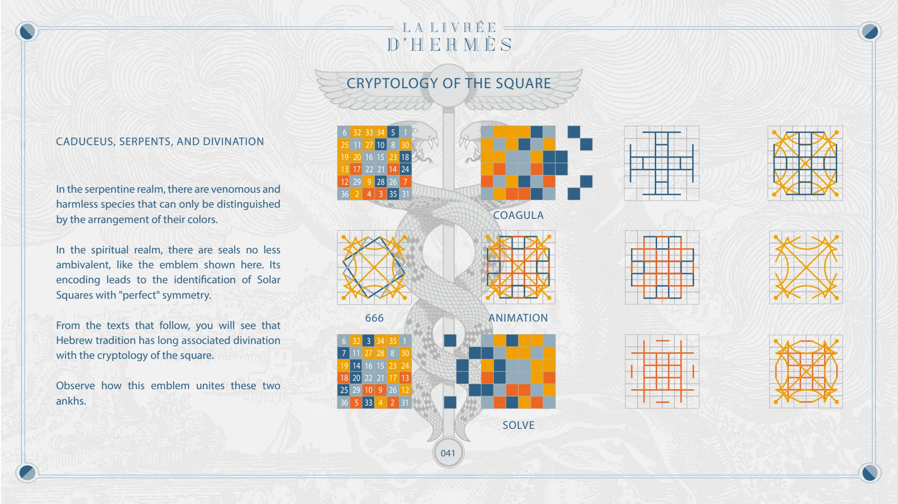
CRYPTOLOGY OF THE SQUARE
CADUCEUS, SERPENTS, AND DIVINATION
In the serpentine realm, there are venomous and harmless species that can only be distinguished by the arrangement of their colors.
6 25 19 13 12 36 32 11 20 17 29 2 33 27 34 10 16 15 22 21 9 4 28 3 5 8 23 14 26 35 1 30 18 24 7 31
COAGULA
In the spiritual realm, there are seals no less ambivalent, like the emblem shown here. Its encoding leads to the identification of Solar Squares with "perfect" symmetry.
From the texts that follow, you will see that Hebrew tradition has long associated divination with the cryptology of the square.
666 3 34 35 8 1 30
ANIMATION
Observe how this emblem unites these two ankhs.
6 7 19 18 25 36 32 11 14 20 29 5 27 28 16 15 22 21 10 9 4 33 23 24 17 26 2 13 12 31 041
SOLVE
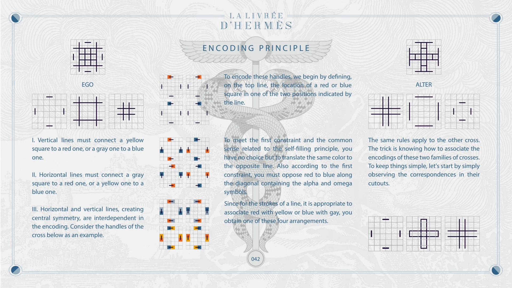
ENCODING PRINCIPLE
EGO
I. Vertical lines must connect a yellow square to a red one, or a gray one to a blue one.
II. Horizontal lines must connect a gray square to a red one, or a yellow one to a blue one.
III. Horizontal and vertical lines, creating central symmetry, are interdependent in the encoding. Consider the handles of the cross below as an example.
To encode these handles, we begin by defining, on the top line, the location of a red or blue square in one of the two positions indicated by the line.
To meet the first constraint and the common sense related to the self-filling principle, you have no choice but to translate the same color to the opposite line. Also according to the first constraint, you must oppose red to blue along the diagonal containing the alpha and omega symbols.
Since for the strokes of a line, it is appropriate to associate red with yellow or blue with gay, you obtain one of these four arrangements.
ALTER
The same rules apply to the other cross. The trick is knowing how to associate the encodings of these two families of crosses. To keep things simple, let's start by simply observing the correspondences in their cutouts.
042
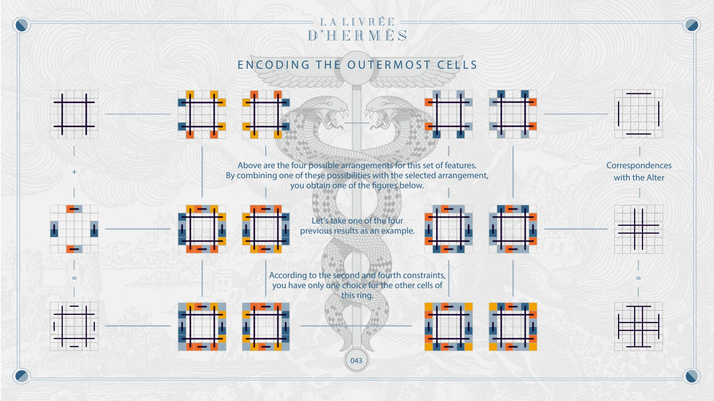
ENCODING THE OUTERMOST CELLS
+
Above are the four possible arrangements for this set of features. By combining one of these possibilities with the selected arrangement, you obtain one of the figures below.
Correspondences with the Alter
Let's take one of the four previous results as an example.
=
According to the second and fourth constraints, you have only one choice for the other cells of this ring.
= 043
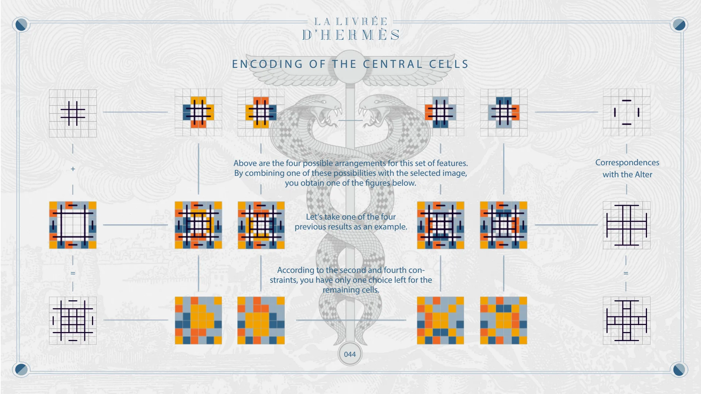
ENCODING OF THE CENTRAL CELLS
+
Above are the four possible arrangements for this set of features. By combining one of these possibilities with the selected image, you obtain one of the figures below.
Correspondences with the Alter
Let's take one of the four previous results as an example.
=
According to the second and fourth constraints, you have only one choice left for the remaining cells.
= 044
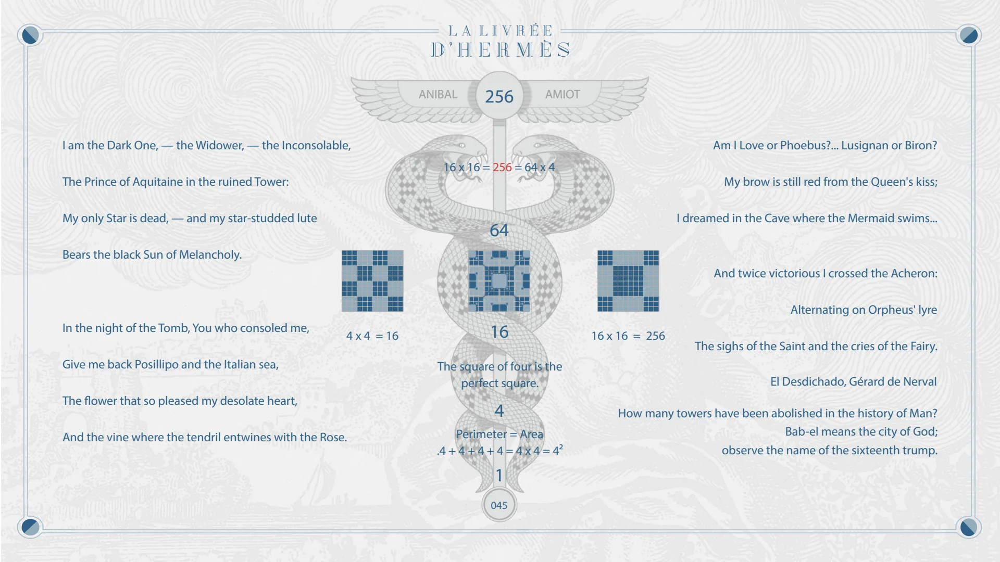
256
I am the Dark One, — the Widower, — the Inconsolable,
The Prince of Aquitaine in the ruined Tower:
My only Star is dead, — and my star-studded lute
Bears the black Sun of Melancholy.
In the night of the Tomb, You who consoled me,
4 x 4 = 16
Give me back Posillipo and the Italian sea,
The flower that so pleased my desolate heart,
And the vine where the tendril entwines with the Rose.
ANIBAL
AMIOT
16 x 16 = 256 = 64 x 4
64 16
The square of four is the perfect square.
4
Perimeter = Area .4 + 4 + 4 + 4 = 4 x 4 = 4²
Am I Love or Phoebus?... Lusignan or Biron?
My brow is still red from the Queen's kiss;
I dreamed in the Cave where the Mermaid swims...
And twice victorious I crossed the Acheron:
16 x 16 = 256
Alternating on Orpheus' lyre
The sighs of the Saint and the cries of the Fairy.
El Desdichado, Gérard de Nerval
How many towers have been abolished in the history of Man? Bab-el means the city of God; observe the name of the sixteenth trump.
1 045
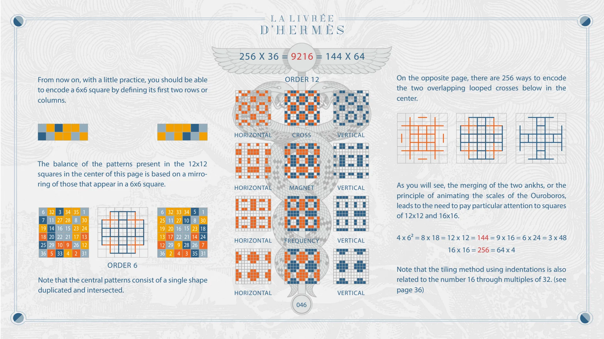
256 X 36 = 9216 = 144 X 64
From now on, with a little practice, you should be able to encode a 6x6 square by defining its first two rows or columns.
ORDER 12
The balance of the patterns present in the 12x12 squares in the center of this page is based on a mirroring of those that appear in a 6x6 square.
3 34 35 8 1 30 33 27 34 10
HORIZONTAL
HORIZONTAL
CROSS
MAGNET
6 7 19 18 25 36 32 11 14 20 29 5 27 28 16 15 22 21 10 9 4 33 23 24 17 26 2 13 12 31 6 25 19 13 12 36 32 11 20 17 29 2 16 15 22 21 9 4 28 3 5 8 23 14 26 35 1 30 18 24 7 31
ORDER 6
Note that the central patterns consist of a single shape duplicated and intersected.
HORIZONTAL
HORIZONTAL
FREQUENCY
VERTICAL
On the opposite page, there are 256 ways to encode the two overlapping looped crosses below in the center.
VERTICAL
VERTICAL
As you will see, the merging of the two ankhs, or the principle of animating the scales of the Ouroboros, leads to the need to pay particular attention to squares of 12x12 and 16x16.
VERTICAL
4 x 6² = 8 x 18 = 12 x 12 = 144 = 9 x 16 = 6 x 24 = 3 x 48 16 x 16 = 256 = 64 x 4
Note that the tiling method using indentations is also related to the number 16 through multiples of 32. (see page 36)
046
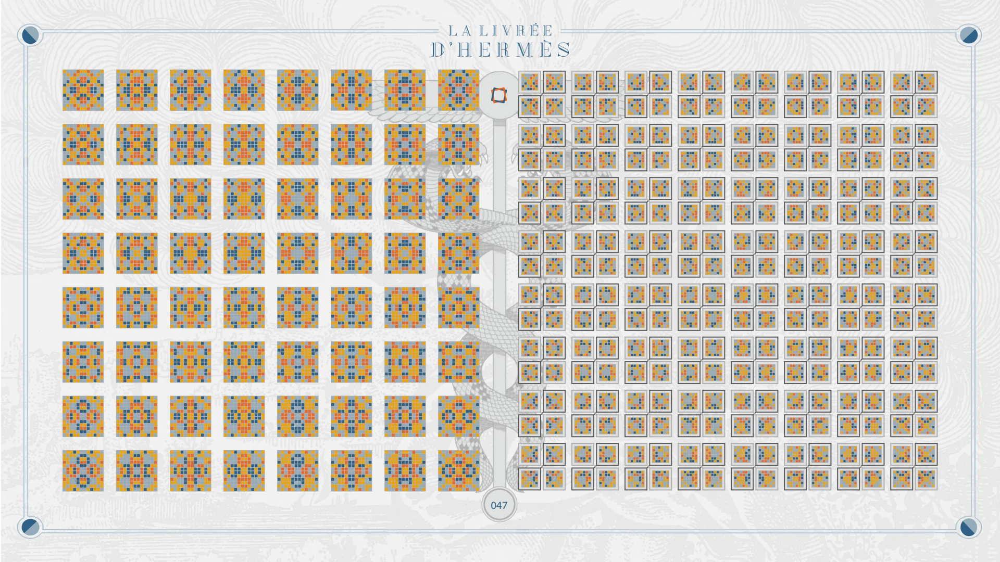
047
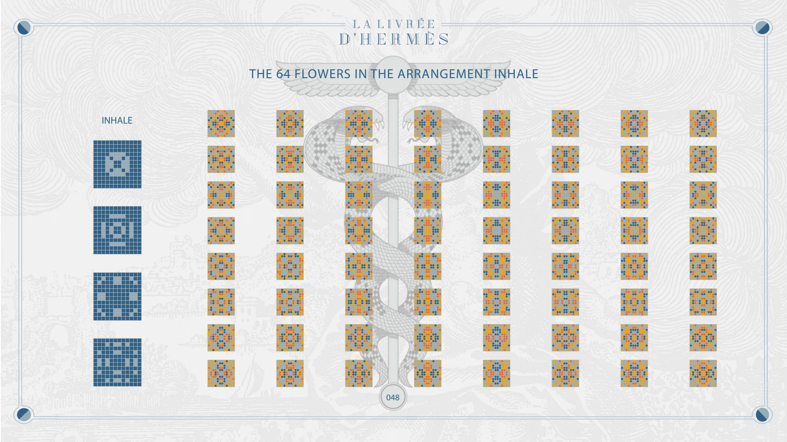
INHALE
THE 64 FLOWERS IN THE ARRANGEMENT INHALE
048
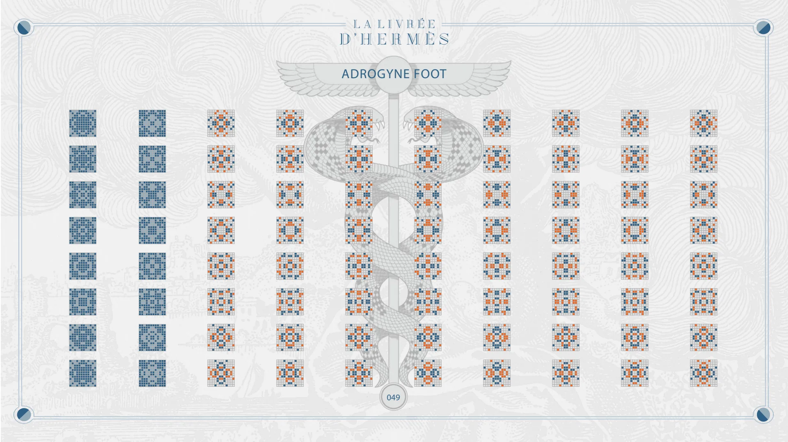
ADROGYNE FOOT
049
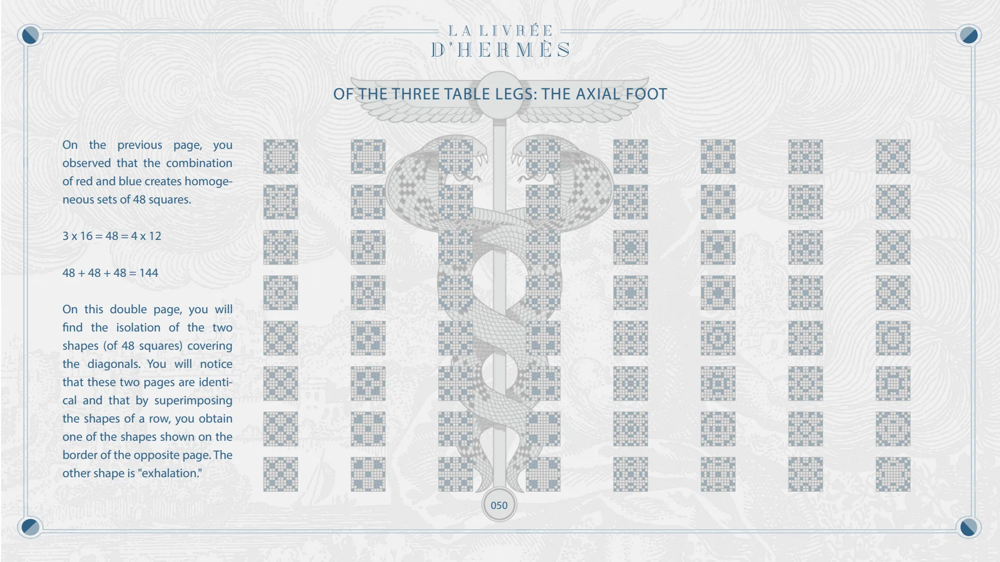
OF THE THREE TABLE LEGS: THE AXIAL FOOT
On the previous page, you observed that the combination of red and blue creates homogeneous sets of 48 squares.
3 x 16 = 48 = 4 x 12
48 + 48 + 48 = 144
On this double page, you will find the isolation of the two shapes (of 48 squares) covering the diagonals. You will notice that these two pages are identical and that by superimposing the shapes of a row, you obtain one of the shapes shown on the border of the opposite page. The other shape is "exhalation."
050
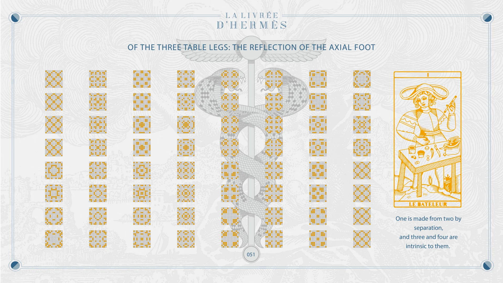
OF THE THREE TABLE LEGS: THE REFLECTION OF THE AXIAL FOOT
One is made from two by separation, and three and four are intrinsic to them.
051
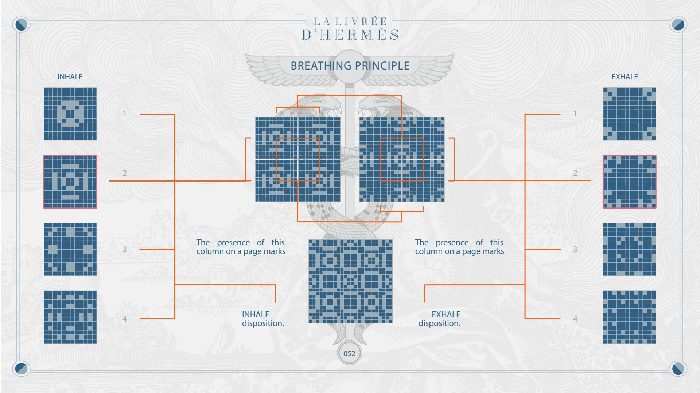
BREATHING PRINCIPLE
INHALE
1 2 3
The presence of this column on a page marks
The presence of this column on a page marks
1 2 3
EXHALE
4
INHALE disposition.
052
EXHALE disposition.
4
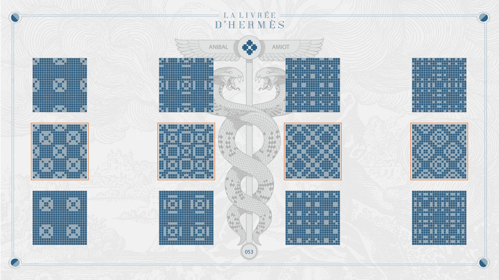
ANIBAL
053
AMIOT
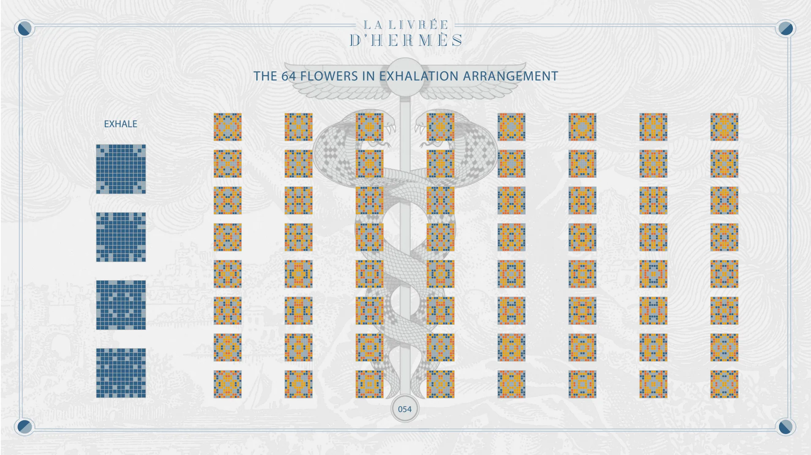
EXHALE
THE 64 FLOWERS IN EXHALATION ARRANGEMENT
054
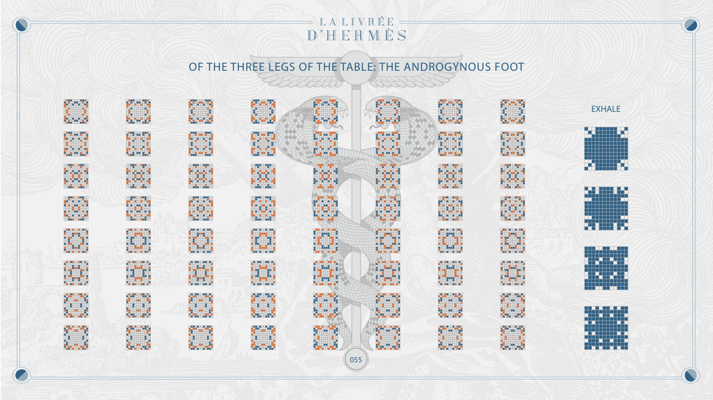
OF THE THREE LEGS OF THE TABLE: THE ANDROGYNOUS FOOT
055
EXHALE
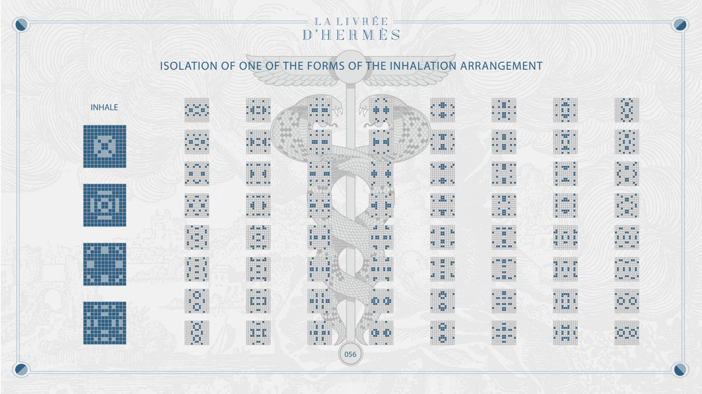
INHALE
ISOLATION OF ONE OF THE FORMS OF THE INHALATION ARRANGEMENT
056
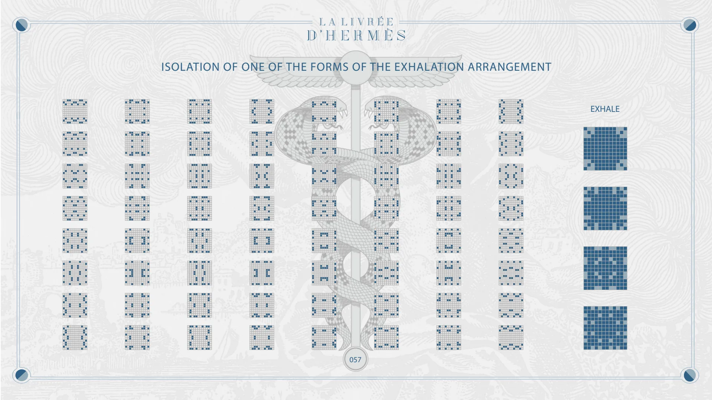
ISOLATION OF ONE OF THE FORMS OF THE EXHALATION ARRANGEMENT
057
EXHALE
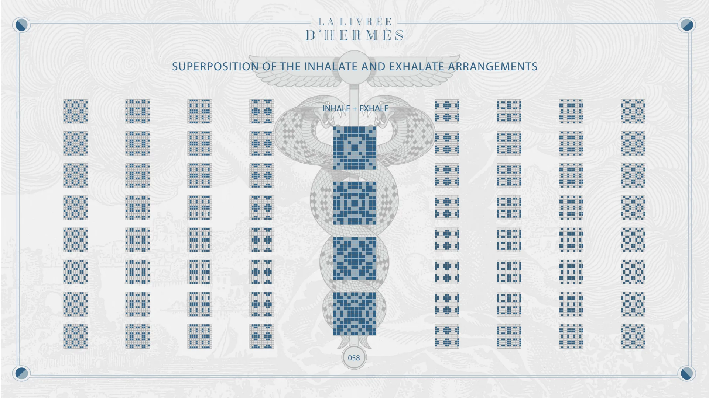
SUPERPOSITION OF THE INHALATE AND EXHALATE ARRANGEMENTS
INHALE + EXHALE
058
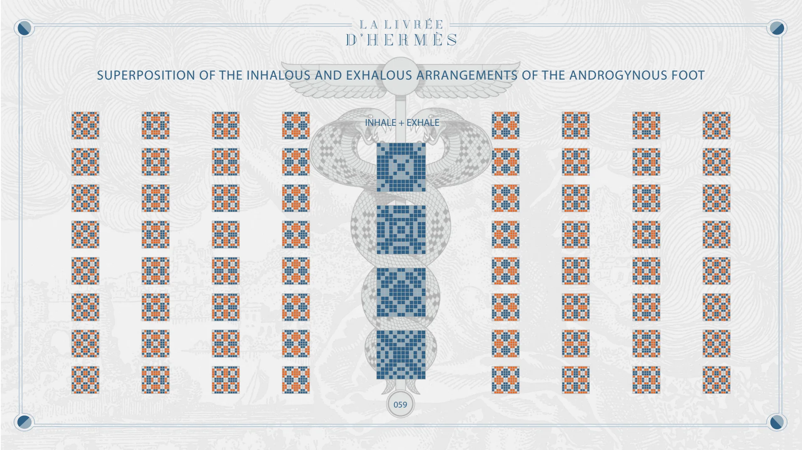
SUPERPOSITION OF THE INHALOUS AND EXHALOUS ARRANGEMENTS OF THE ANDROGYNOUS FOOT
INHALE + EXHALE
059
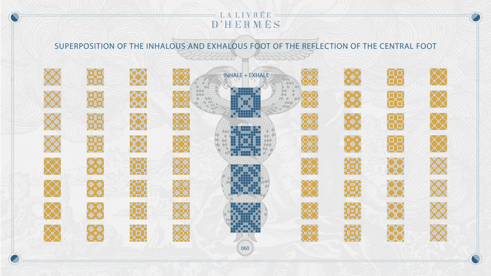
SUPERPOSITION OF THE INHALOUS AND EXHALOUS FOOT OF THE REFLECTION OF THE CENTRAL FOOT
INHALE + EXHALE
060
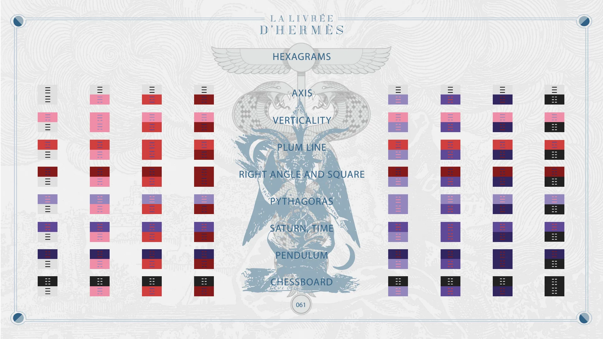
HEXAGRAMS
AXIS
VERTICALITY
PLUM LINE
RIGHT ANGLE AND SQUARE
PYTHAGORAS
SATURN, TIME
PENDULUM
CHESSBOARD
061
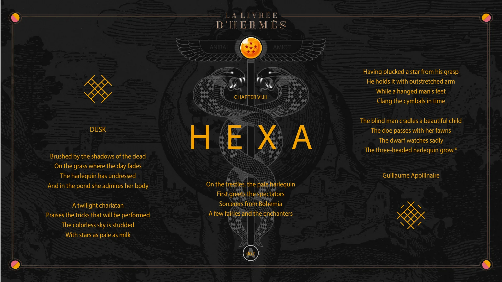
DUSK
Brushed by the shadows of the dead On the grass where the day fades The harlequin has undressed And in the pond she admires her body
A twilight charlatan Praises the tricks that will be performed The colorless sky is studded With stars as pale as milk
ANIBAL
AMIOT
CHAPTER VI.III
HEXA
On the trestles, the pale harlequin First greets the spectators Sorcerers from Bohemia A few fairies and the enchanters
Having plucked a star from his grasp He holds it with outstretched arm While a hanged man's feet Clang the cymbals in time
The blind man cradles a beautiful child The doe passes with her fawns The dwarf watches sadly The three-headed harlequin grow.*
Guillaume Apollinaire A 062
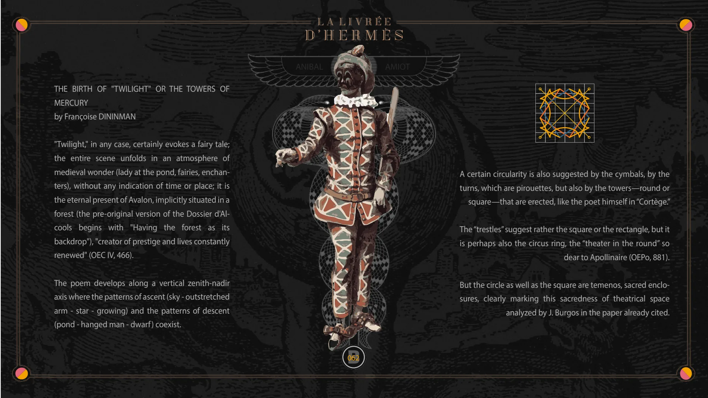
THE BIRTH OF "TWILIGHT" OR THE TOWERS OF MERCURY by Françoise DININMAN
ANIBAL
"Twilight," in any case, certainly evokes a fairy tale; the entire scene unfolds in an atmosphere of medieval wonder (lady at the pond, fairies, enchanters), without any indication of time or place; it is the eternal present of Avalon, implicitly situated in a forest (the pre-original version of the Dossier d'Alcools begins with "Having the forest as its backdrop"), "creator of prestige and lives constantly renewed" (OEC IV, 466).
The poem develops along a vertical zenith-nadir axis where the patterns of ascent (sky - outstretched arm - star - growing) and the patterns of descent (pond - hanged man - dwarf) coexist.
AMIOT
A certain circularity is also suggested by the cymbals, by the turns, which are pirouettes, but also by the towers—round or square—that are erected, like the poet himself in “Cortège.”
The “trestles” suggest rather the square or the rectangle, but it is perhaps also the circus ring, the “theater in the round” so dear to Apollinaire (OEPo, 881).
But the circle as well as the square are temenos, sacred enclosures, clearly marking this sacredness of theatrical space analyzed by J. Burgos in the paper already cited.
B 062
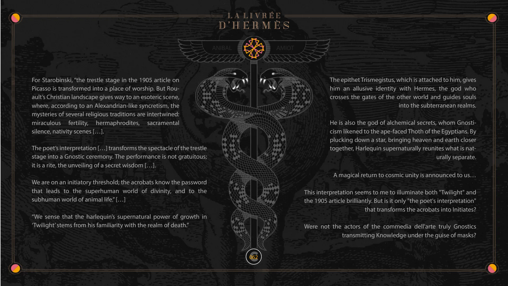
For Starobinski, “the trestle stage in the 1905 article on Picasso is transformed into a place of worship. But Rouault’s Christian landscape gives way to an esoteric scene, where, according to an Alexandrian-like syncretism, the mysteries of several religious traditions are intertwined: miraculous fertility, hermaphrodites, sacramental silence, nativity scenes […].
ANIBAL
The poet’s interpretation […] transforms the spectacle of the trestle stage into a Gnostic ceremony. The performance is not gratuitous; it is a rite, the unveiling of a secret wisdom […].
We are on an initiatory threshold; the acrobats know the password that leads to the superhuman world of divinity, and to the subhuman world of animal life.” […]
“We sense that the harlequin’s supernatural power of growth in ‘Twilight’ stems from his familiarity with the realm of death.”
AMIOT
The epithet Trismegistus, which is attached to him, gives him an allusive identity with Hermes, the god who crosses the gates of the other world and guides souls into the subterranean realms.
He is also the god of alchemical secrets, whom Gnosticism likened to the ape-faced Thoth of the Egyptians. By plucking down a star, bringing heaven and earth closer together, Harlequin supernaturally reunites what is naturally separate.
A magical return to cosmic unity is announced to us…
This interpretation seems to me to illuminate both "Twilight" and the 1905 article brilliantly. But is it only "the poet's interpretation" that transforms the acrobats into Initiates?
Were not the actors of the commedia dell'arte truly Gnostics transmitting Knowledge under the guise of masks?
C 062
© Anibal Edelberto Amiot. CC BY-NC 4.0 — creativecommons.org/licenses/by-nc/4.0 · DOI 10.5281/zenodo.22722485